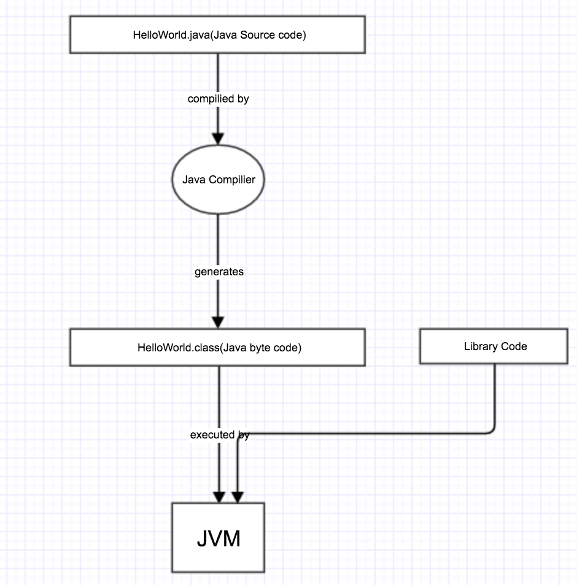
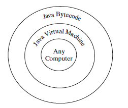
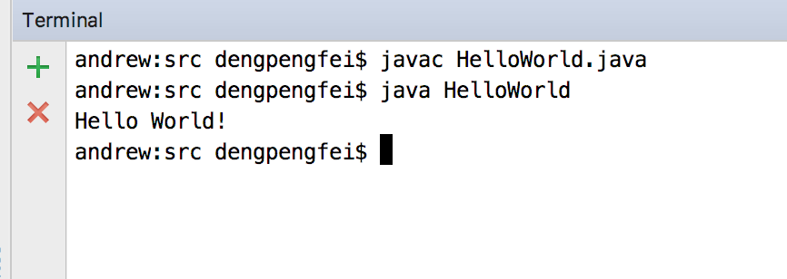

Creating,Compiling and Executing Java Program
So far you have already know how to write your first Java program,that is HelloWorld.java but don't know how to let the machine(computer) actually run it.
Well in java programming before we really executing the program we need to compiling the source-code into byte-code first and then the byte-code can be executed by the JVM.
Picture blow demonstrate this process:

You can use any text editor or IDE to create or edit a java source-code file.Then Java compiler translates a Java source file into a Java byte-code file.In this case it translate HelloWorld.java into HelloWorld.class . Java language is a high-level language that human readable whereas byte-code is low-level language that designed for the JVM(Java Virtual Machine) to execute.The byte-code is similar to machine instructions but is architecture neutral and can run on any platform that has a JVM as shown below:

Rather than a physical machine the virtual machine is a program that interprets Java byte-code.It translates the individual instructions in the byte-code into the target machine language code one at a time rather than the whole program as a single unit. Each step is executed immediately after it is translated.The is one of the primary advantages of Java programming language:
Write once run everywhere.
Java source-code is complied into byte-code and will be executed by the JVM alongside the code in the Library.
Below picture shows the real world example of what i mentioned before:

Video

Compile and run a Java program
javacis a command provided by JVM to compile java source-code into byte-code,in this case it generate HelloWorld.class from HelloWorld.java.javais a command provided by JVM to execute byte-code (HelloWorld.class).
Note
Do not use the extension
.classin the command line when executing the program.Usejava ClassNameto run the program.
source code
checkpoint
- What is the Java source filename extension, and what is the Java byte-code filename extension?
- What are the input and output of a Java compiler?
- What is the command to compile a Java program?
- What is the command to run a Java program?
- What is the JVM?
- Can Java run on any machine? What is needed to run Java on a computer?